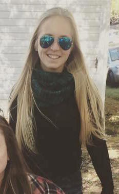
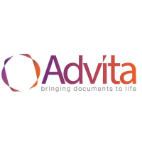

My name is Joycelyn Rooney. I am 22 years old and a senior at the University of Central Florida currently seeking my Bachelors in Digital Media with a concentration in Web Design. I have already completed a Minor in Marketing.
Advita is a a document retrieval service that work for law firms. So we partner up with law firms such as Morgan and Morgan and offices of Dan Newlin to draw up legal requests and obtain records for the clients they work for. My specific job title is Retreival Data Analyst. So I am assigned to call for specific law firms in Philadelphia, PA to call facilities and retrieve any and all supporting documents the attorney needs for his deposition. I also am responsible for drawing up legal requests for some law firms in Chicago and sending them out in a timely manner to retrieve the documents on time.

I worked at Sunglass Hut for about 4 years. It was a wonderful learning experience. I learned more than anything, sales techniques. Learning how to interact with a customer to quickly find solutions to their needs really helped me learn how to think on my feet. While working, all associates do work alone every shift. So having to learn the cocktail effect to handle multiple groups at one time and make sure every customer is attended to was a very useful and helpful technique. I worked very closely with the store manager and worked my way up to being equal level of an assistant manager. I was in charge of training newly hired associates. I also drafted a new training program. The one that Sunglass Hut had was not sufficient enough to quickly train associates; especially around seasonal times.
As I said above, I am a senior at UCF. I am planning on graduating December of 2017 with a Bachelors degree in Digital Media Web Design and a Minor in Marketing from the College of Arts and Humanities. Through my years in college, I have had many experiences other than just educational.
Back during my first summer term at UCF in 2013, I decided to joing the UCF Knights Wakeboard Club. Every Sunday we would pile up in someone's car and drive to Orlando Watersports Complex to practice. UCF's Wakeboard Club is a 2 time national Collegiate Cable champion in the country. I joined this club because it let me get my foot in the door or getting involved with UCF and meeting new people.
During my sophomore year, I decided to venture into Greek life at UCF. I went through the formal recruitment process and eventually ran home to the house of Kappa Kappa Gamma. I decided to join Greek life to help meet more people on campus, get involved with philanthropy both on campus and off campus, and help build my resume by taking on leadership positions. During my time in Greek life, I was a Rho Gamma during fall of 2016, which is someone who voluntarily and temporarily gives up their letters to help other girls find their home. Also, during the fall of 2016, I acted as Panhellenic Director for Pack to Attack. Pack to Attack is a UCF philanthropy that partners up with organization called Feeding Children Everywhere to pack meals and send them to local neighborhoods that cannot afford food.
| Amatuer | Beginner | Proficient | Expert | |
|---|---|---|---|---|
| Photoshop | - | - | - | |
| Legal Jargon | - | - | - | |
| Typing Skills | - | - | - | |
| Mac Platform | - | - | - | |
| PHP | - | - | - | |
| GitHub | - | - | - |